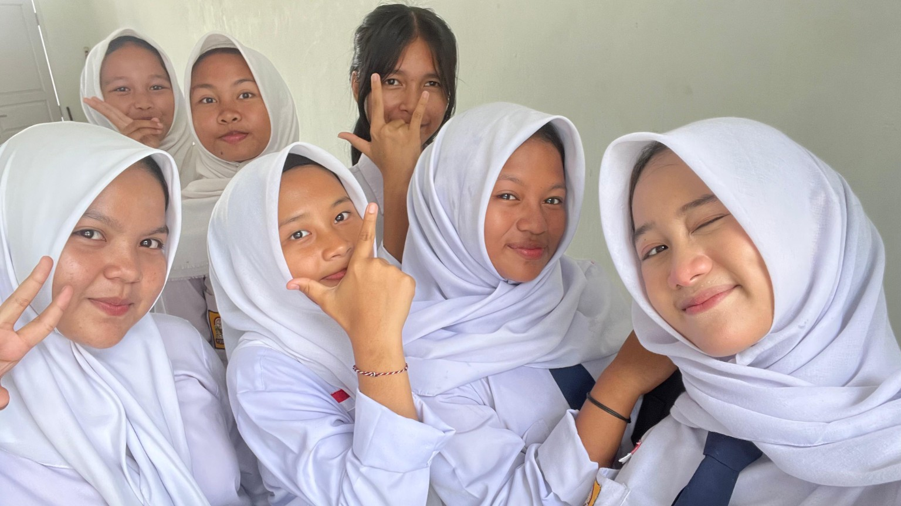
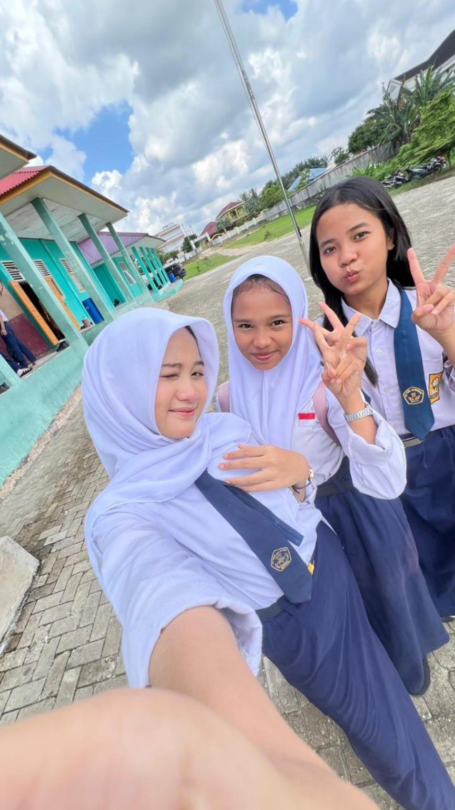
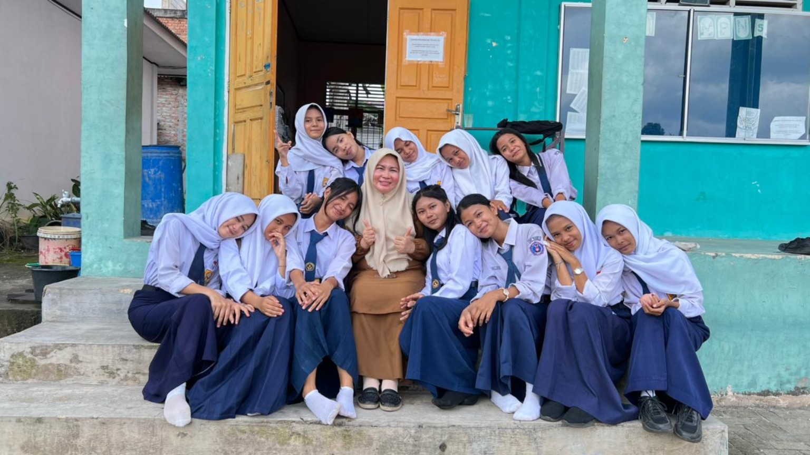
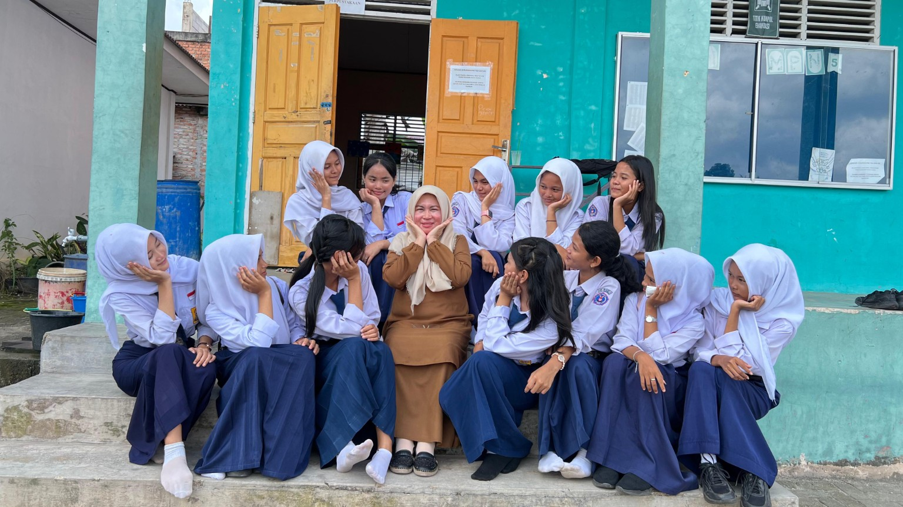
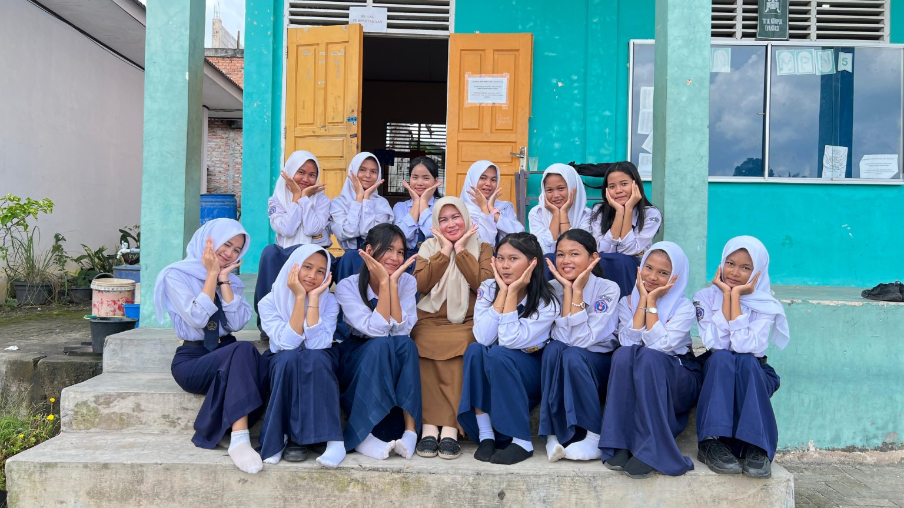
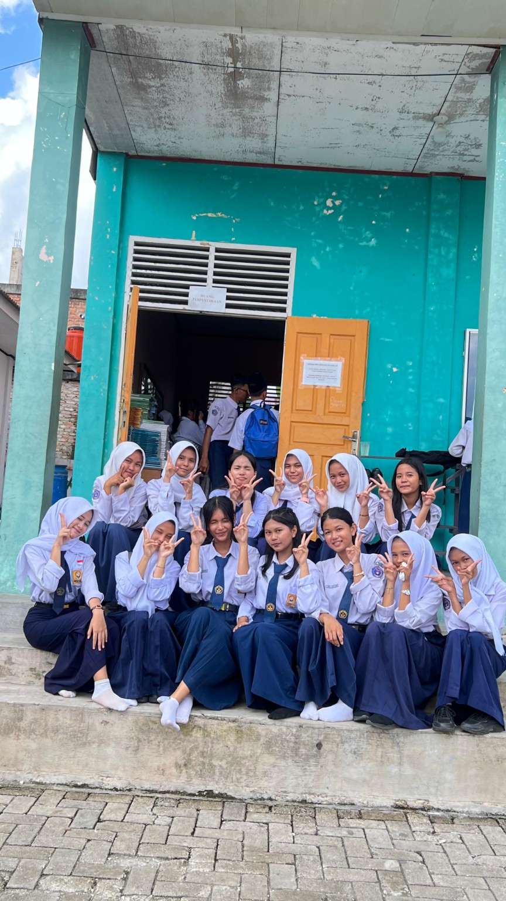
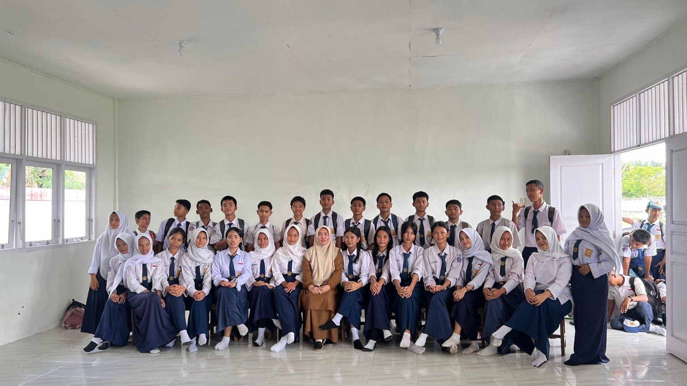

About Class
Tentang Kelas 9C
9C itu tipe kelas yang kalau rame ya rame sekalian, kalau kompak ya kelihatan dari jauh. Di dalamnya ada tawa, lelah, ambisi, malu-malu, dan momen-momen kecil yang diam-diam membangun rasa punya bersama.
Kelas 9C bukan cuma tempat duduk, papan tulis, dan jadwal pelajaran. Ini tempat di mana orang-orang belajar saling ngerti, saling nutupin kekurangan, dan saling ngasih semangat pas capeknya udah mulai keterlaluan.
Ada yang paling rame, ada yang paling kalem, ada yang suka bercanda di waktu yang nggak pas, dan justru itu yang bikin 9C hidup. Di balik foto-foto ini ada cerita tentang perjuangan, rasa lelah, dukungan kecil, dan tawa yang berkali-kali menyelamatkan suasana.
KompakSatu tujuan, banyak warna.
SeruNggak pernah bener-bener sepi.
HangatSaling jaga tanpa banyak bicara.
BerkesanFoto-fotonya bukan pajangan biasa.
Gallery / Memories
Galeri yang hidup, bukan sekadar arsip
Semua foto disusun jadi pengalaman visual yang lebih lembut. Ada yang tampil sebagai spotlight, ada yang jadi bagian dari mosaik, dan semuanya diberi ruang supaya terasa penting.

IX-C Moment
Selfie kecil, rasa besar
Momen random yang justru paling gampang bikin kangen.

IX-C Moment
Langit, sekolah, dan senyum
Potret santai yang terasa kayak jeda paling manis di tengah hari.

IX-C Moment
Circle kecil yang hangat
Foto yang terasa ringan, tapi isinya penuh cerita.

IX-C Moment
Rapat, kompak, dan manis
Formasi rapi yang nunjukin kelas ini bukan kelas biasa.
IX-C Moment
Kelas besar, hati lebih besar
Banyak orang, tapi tetap terasa satu rumah.

IX-C Moment
Selfie yang nggak direncanain
Salah satu foto yang paling jujur: rame, dekat, dan natural.

IX-C Moment
Bersandar di kenangan
Momen santai yang bikin vibe kelas terasa hidup.
IX-C Moment
Satu kelas, satu cerita
Foto bareng yang menyimpan energi paling utuh dari 9C.
IX-C Moment
Hangat di tengah banyak wajah
Pelukan visual yang ringkas, lembut, dan sangat berkesan.

IX-C Moment
Final form paling kompak
Potret yang rasanya seperti penutup chapter yang indah.
Timeline
Perjalanan yang pelan tapi nempel
Biar kenangan nggak cuma numpuk jadi foto, timeline ini nyusun rasa 9C dari awal sampai akhir. Scroll pelan, biar tiap momen sempat terasa.
Awal perjalanan
Pertemuan yang pelan-pelan jadi kebiasaan
Dari hari pertama sampai mulai saling kenal, 9C tumbuh jadi ruang yang akrab. Nggak selalu mulus, tapi justru di situ letak hangatnya.
Hari-hari sibuk
Tugas, canda, dan ribut kecil yang bikin hidup
Kelas ini paham rasanya dikejar tugas, disuruh kompak, lalu tetap ketawa bareng setelahnya. Drama kecil lewat, kebersamaan yang tinggal.
Bersama guru
Didampingi, diarahkan, dan dijaga
Di balik foto-foto yang lucu, ada sosok guru yang ikut hadir sebagai bagian penting dari perjalanan kelas. Itu yang bikin kenangan ini terasa utuh.
Menjelang akhir
Bukan selesai, cuma pindah bentuk
SMP memang berlalu, tapi 9C nggak benar-benar hilang. Dia berubah jadi cerita yang bakal terus hidup tiap kali foto-foto ini dibuka lagi.
Selfie kecil, rasa besarMomen random yang justru paling gampang bikin kangen.
Langit, sekolah, dan senyumPotret santai yang terasa kayak jeda paling manis di tengah hari.
Circle kecil yang hangatFoto yang terasa ringan, tapi isinya penuh cerita.
Rapat, kompak, dan manisFormasi rapi yang nunjukin kelas ini bukan kelas biasa.
Kelas besar, hati lebih besarBanyak orang, tapi tetap terasa satu rumah.
Selfie yang nggak direncanainSalah satu foto yang paling jujur: rame, dekat, dan natural.
Bersandar di kenanganMomen santai yang bikin vibe kelas terasa hidup.
Satu kelas, satu ceritaFoto bareng yang menyimpan energi paling utuh dari 9C.
Hangat di tengah banyak wajahPelukan visual yang ringkas, lembut, dan sangat berkesan.
Final form paling kompakPotret yang rasanya seperti penutup chapter yang indah.